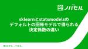
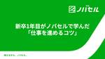
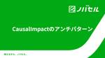
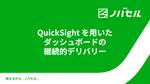
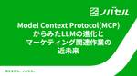

RAKSUL TechBlog
https://techblog.raksul.com/
RAKSULグループのエンジニアが技術トピックを発信するブログです
フィード
広告運用Agentを発想するためのLLM基礎研究への招待
RAKSUL TechBlog
この記事は ノバセル Advent Calender 11日目です。 ノバセル テクノロジー開発部の吉田と申します。 今回の記事では生成AIの将来を直近発表された論文をとおして論じていきたいと思います。 はじめに 生成AIが普及し、総務省の調べでは日本では個人10%弱, 企業50%弱の人々が日常的に生成AIに触れるようになりました。 生成AIの利用率 生成AIのユースケースが増加している現在、その流れが今後さらに拡大していくことは容易に予想されます。 加えて大規模言語モデル（LLM）がもともと備えている検索から要約といったプロセスの自動化を基盤に、 LLMを活用してタスクを包括的に完結させる「…
6時間前

sklearnとstatsmodelsのデフォルトの回帰モデルで得られる決定係数の違い
RAKSUL TechBlog
この記事は ノバセル Advent Calender 10日目です。 ノバセルでデータサイエンティストをしている宮野です。前回は CausalImpactのアンチパターン について記載しました。今回はライト目に、自身の備忘録として書き残します。 はじめに ノバセルでは、比較的シンプルな分析ロジックを用いた分析で意思決定の支援をできるものは、streamlitを活用したWebアプリケーションを社内展開しています。その中には、単回帰分析で得られた決定係数を活用する部分が1部含まれています。 この実装を進める中で、Pythonのsklearnとstatsmodelsを用いて決定係数を求めた際、デフォ…
2日前

新卒1年目がノバセルで学んだ「仕事を進めるコツ」
RAKSUL TechBlog
この記事は ノバセル Advent Calender 9 日目です。 こんにちは、ノバセル 24 年新卒の秦です。 テクノロジー開発部にて、データエンジニアをしています。 入社をしてから８ヶ月ほどが経ちました。 最初は仕事がなかなか上手く進められず、一つの仕事に必要以上に時間がかかっていました。 しかし、「あること」を意識するようになってから、少しずつ仕事が上手く進められるようになってきました。 今回は私が実践して効果を感じた「仕事を進めるコツ」を共有したいと思います。 コツは「分解」すること そのコツとは「分解すること」です。 仕事は以下の二種類に大別できます。 具体的でわかりやすい仕事 例…
2日前
おそらくあなたがまだ知らない AI 情報系 YouTube チャンネル 5 選 2
2
RAKSUL TechBlog
序文 この記事は ノバセル Advent Calender 8 日目です。 ノバセルで CTO をしている戸辺です。 ノバセルはいま AI を "使う" ということに力を入れており、AI を使って徹底的に社内外の生産性を改善したいと考えています。もともと私たちの親会社であるラクスルの Vision は "仕組みを変えれば、世界はもっとよくなる" ということで、レガシーな産業に IT 等の仕組みを取り入れることで、世界を良くするということにアプローチしてきました。ノバセルもそこは同じで、特にそれをマーケティング領域で実現していこうという事業体なだけです。 この観点にたつと、before AI の…
4日前
ノバセルPdMが「プロダクトマネジメントのおすすめ本」を語る
RAKSUL TechBlog
この記事は ノバセル Advent Calender 7日目です。 こんにちは。ノバセルにてプロダクトマネージャーをやっている林です。 本記事では、私が今年読んだ本の中からプロダクトマネジメント関連のおすすめ本を2冊ご紹介したいと思います。 おすすめ本①：プロダクトマネージャーのしごと 第2版 1冊目は『プロダクトマネージャーのしごと 第2版 ―1日目から使える実践ガイド』です。 プロダクトマネージャーのしごと 第2版 ―1日目から使える実践ガイド作者:Matt LeMayオーム社Amazon この本を一言で言うと「PdMが実際の仕事で成果を出すための心構え/TIPSが学べる本」です。 プロダ…
5日前

CausalImpactのアンチパターン 2
RAKSUL TechBlog
この記事は ノバセル Advent Calender 6日目です。 こんにちは。ノバセルでデータサイエンティストをしている宮野です。 本記事では、CausalImpactを用いた効果検証および意思決定をする際に、気をつけたほうがいいポイントをアンチパターンとして紹介いたします。 はじめに 数年前に比べて、データサイエンティストやアナリストだけでなく、プロダクトマネージャーやマーケターなど、データ活用が進む中でCausalImpactの概念を理解する人々が増えているように感じます。しかし、その一方でデータを与えるだけで結果を得られるため、誤った結果を導くケースもあります。 CausalImpac…
6日前

QuickSight を用いたダッシュボードの継続的デリバリー
RAKSUL TechBlog
この記事は、ノバセル - Qiita Advent Calendar 2024 - Qiita の 5日目の記事です。 昨日は Model Context Protocol(MCP)からみたLLMの進化とマーケティング関連作業の近未来 - RAKSUL TechBlog という記事でした。 はじめに こんにちは、ノバセルでデータエンジニアをしている森田 (@kz_morita) です。 先日開催された「RAKSUL × primeNumber 合同勉強会」で、「BI ダッシュボードの DevOps と CI/CD についての取り組みと課題」をテーマに登壇しました。 開催レポートはこちらになりま…
7日前
【イベントレポート】プロダクト戦略徹底討論！RAKSUL・タイミーが描く、戦略・組織・プロダクト基盤設計とは？ 1
RAKSUL TechBlog
11月15日、ファインディ株式会社主催のイベント「開発生産性Kaigi スタートアップが目指す、開発と事業成長の接続〜価値創造への挑戦〜」が開催されました。 （アーカイブ動画はこちら） このイベントでは、スタートアップや成長企業におけるエンジニアリングと事業の接続を深く掘り下げ、事業価値を最大化するための具体的なアプローチや事例が多く取り上げられました。 特に、事業の多角化やスケールフェーズにおいて、いかに効果的な戦略を展開し、それを支える組織と基盤を構築するかが成否を分けます。当日は、異なる成長フェーズにある2社の技術責任者、ラクスル株式会社の上級執行役員グループCTO竹内と、タイミー株式会…
7日前

Model Context Protocol(MCP)からみたLLMの進化とマーケティング関連作業の近未来 1
RAKSUL TechBlog
この記事は ノバセル Advent Calender 4日目です。 ノバセル テクノロジー開発部の吉田と申します。 今回の記事ではClaudeが外部のツールとデータのやり取りが可能になったModel Context Protocol(MCP)からみたLLMの進化と作業の近未来を論じていきたいと思います。 MCPの紹介 11/26にAnthoropicからModel Context Protocol(以下MCP)が発表されました。画期的なこのProtocolは瞬く間にニュースとなり広がり革命とまで言われています。それはなぜなのでしょう？ LLMはChatGPTの発表からテキスト生成→ テキスト要…
8日前

dbt v1.8から追加されたunit_testの機能、overridesの紹介
RAKSUL TechBlog
導入 この記事は ノバセル Advent Calender 3 日目です。 こんにちは、ノバセル 24 年新卒の秦です。 テクノロジー開発部にて、データエンジニアをしています。 弊社では dbt を使っています。 dbt は v1.8 から unit_test が使えるようになりました。 今回はその unit_test の機能の 1 つである overrides について紹介したいと思います。 overrides はマクロや変数の出力を unit_test 時のみ上書きすることができる機能です。 overrides はこんな場面で使えますよ、私は overrides をこんな場面で使いましたと…
8日前
ノバセルのデータ基盤アーキテクチャ - マルチデータプロダクトへ向けて
RAKSUL TechBlog
こんにちは。ノバセルにてデータエンジニアをやっている山中(@yamnaku_)です。 本記事では、「マルチデータプロダクト」へ向けたノバセルのデータ基盤アーキテクチャの変遷と、その過程で得られた知見をご紹介したいと思います。 この記事は ノバセル Advent Calender 2 日目です。 はじめに ノバセルでは、「マーケティングを民主化する」というミッションのもと、お客様の広告効果の可視化や最適化のサービス群を展開しています。 これらのサービスでは、データを用いた合理的な意思決定ができるよう多くのデータを活用しています。一例を挙げると以下のようなものがあります。 サイト訪問データ Web…
10日前
Dagster Pipes で Rust を動かす
RAKSUL TechBlog
バックエンドエンジニアの渡邉です。Dagster Pipesを使ってRustバイナリ(CLI)を実行する試みを記事にしました。 この記事は ノバセル Advent Calender 1日目です。 この記事はこんな方向けです。 日頃からDagsterを使ってる Rustが好き 必ずしもTechブログに実用性を求めない これから紹介するコードは、Dagsterのexperimentalな機能に依存してるのでproductionで使わないでください。 コードのディレクトリ構成 まず、ディレクトリ構成を紹介します。 dagster_dir以下がDagsterプロジェクトです。Dagsterのコードは日…
11日前
HackWeek2024レポート：チラシの入稿データをもとにのぼりの入稿データを自動生成してみた
RAKSUL TechBlog
皆さんこんにちは！ラクスル事業部でエンジニアをしている西尾、唐木（@knottey）、久冨（@tomi_t0mmy）です。 ラクスルでは毎年「HackWeek」というハッカソンイベントを行っています。今回、私たちは24新卒エンジニア2名、23新卒エンジニア1名という若手中心のチームで参加し、Make It Scalable AWARD 1を受賞することができました。24卒のメンバーは初めての参加でドキドキでしたが、普段は経験できないようなテーマや技術に挑戦する絶好の機会となりました。 受賞時の写真 このブログでは、私たちが作ったプロダクトの概要や参加した感想などをレポートしていきます。 イベン…
20日前
RAKSUL × primeNumber 合同勉強会を開催しました！
RAKSUL TechBlog
こんにちは、RAKSUL技術広報の和田です。 2024年11月5日、primeNumber社のみなさまをRAKSULにお招きし、合同勉強会を開催しました。この記事では、その様子をレポートしたいと思います！ 発表内容 今回の合同勉強会は、primeNumber社CIO山本さんからの挨拶で幕を開け、各社のメンバーが主に「データエンジニアリング」をテーマにプレゼンテーションを行いました。 プレゼンテーションでは、各社が日々直面する課題と、それに対する技術的な解決策が紹介され、活発な意見交換と知見の共有が行われました。 primeNumber社CIO山本さんによる開会の儀 1.「BI ダッシュボードの…
1ヶ月前
Snowflake World Tour Tokyo 2024に登壇してきました
RAKSUL TechBlog
こんにちは。ノバセルでデータエンジニアをやっている山中（@yamnaku_）です。 先日開催されたSnowflake World Tour Tokyo 2024 で「Data Superheroesが語る社内で『本当に使われる』データ基盤構築の道のりと展望」と題して登壇いたしました。なお、TROCCOを開発するprimeNumber社のスポンサーセッションにお呼びいただいた形で、機会をいただいたprimeNumber社様には感謝申し上げます。イベントは大変活況で、オフライン・オンライン合わせて4000人以上の参加者がいたようです。米国本社からCEO Sridhar Ramaswamy 氏も登壇…
1ヶ月前
5日間のサマーインターンシップ体験記
RAKSUL TechBlog
はじめに ラクスルサマーインターンに参加した玉田です。本記事では、インターンでの取り組みや感じたことについてお伝えします。 インターンの概要 実施内容：課題解決型インターンシップ ラクスルの実際のサービスが抱えている課題をチームで解決 期間：5日間 前半2日はオンライン、後半3日は東京目黒のオフィスに出社 地方在住のため、3日目の朝に移動し、後半はホテルを手配していただきました。 時間：11:00〜19:00 朝はあまり強くないため、11時開始は非常にありがたかったです。 参加動機 就活サイトでインターンを探していたところ、ラクスルのインターンは期間が短いながらも内容が充実していると感じ、応募…
1ヶ月前
ラクスルインターンシップ参加レポート
RAKSUL TechBlog
はじめに 先日ラクスルのインターンに参加した芦沢と申します。この記事ではインターンシップの感想や学びを振り返り、私の経験を共有したいと思います。 インターン概要 インターン名：課題解決型インターンシップ 期間：5日間 報酬：10万円 形式：ハイブリッド（最初の2日はオンライン、3日は出社） 内容：興味のあるテーマを選択し、4～5人でチームを組んで開発を行う 私たちの開発について テーマ 私のチームは「注文データから顧客ロイヤルティを可視化するプロジェクト」に取り組みました。具体的には、顧客の注文データをもとにロイヤルティを分析し、特定の顧客層に対する効果的なリテンション施策を提案するためのツー…
1ヶ月前
ラクスルのインターンシップで見えた未来の自分
RAKSUL TechBlog
はじめに ラクスル課題解決型インターンに参加させていただきました、若林です。本記事では、今回のインターンを振り返り、学んだことをまとめていきたいと思います。 どんなインターン？ 「エンジニアとしての未来の自分」を体験し、サービス開発の楽しさ、難しさ、そして面白さを実感できた5日間でした。 今回のインターンでは、ラクスルが実際に直面している課題に取り組みました。 形式：就業型インターンシップ 実施時期：2024年9月9日～9月13日の5日間 実施方法：オンライン・オフラインの両方を取り入れたハイブリッド形式 待遇：100,000円/5日間 なぜ参加したか 私がラクスルのインターンシップに参加した…
1ヶ月前
ラクスルの課題解決型インターンに参加しました
RAKSUL TechBlog
はじめまして、筑波大学大学院で数学を専攻している酒井と申します。この度、ラクスルの5日間の課題解決型インターンに参加しました。この記事を読んでいる方の中には、インターン参加を迷っている方もいらっしゃるかもしれませんが、まずお伝えしたいのは「とにかく楽しかった！」ということです。 参加した理由 私は数学を専攻しており、エンジニアリングとは直接関係が薄い分野にいます。しかし、IT業界にキャリアチェンジを目指す中で、チームでの開発経験が必要だと感じ、インターンを探していた際にラクスルのインターンに出会いました。 参加を決めた理由は、以下の3点に魅力を感じたからです。 課題解決型で、実際の業務に近い体…
2ヶ月前
Raksul Tech Internship 2024 体験記
RAKSUL TechBlog
はじめに ラクスル株式会社の課題解決型インターンに参加させていただいた上田です。このブログでは、インターンでの活動内容や学び、感想をまとめています。参考にしていただければと思います！ インターン概要 内容：ラクスルのサービスにおいて実際に抱える課題に挑戦（4～5人チームで開発に取り組みます） 期間：2024/09/09(月) ～ 09/13(金) の5日間 時間：11:00 ～ 19:00（開始時間が遅めで、朝が弱い私にとっては嬉しかったです！） 形式：2日間オンライン、3日間対面のハイブリット形式（私は中部地方に住んでいるため、2日目の夜に東京へ移動しました） 待遇：100,000円/5日間…
2ヶ月前
ラクスルサマーインターン参加レポート
RAKSUL TechBlog
はじめに ラクスルサマーインターンに参加した穂積です。本記事では、以下の内容についてお伝えします。 ラクスルサマーインターンシップとは 参加して実際どうだったのか インターン概要 【実施内容】実際のサービスの課題解決にチームで取り組む 【期間】5日間 【インターンの形式】ハイブリッド形式(最初の2日はオンライン、残りの3日は出社) 応募のきっかけ 就活サイトでスカウトをいただき、ラクスルを初めて知りました。人事の方との面談を通して、課題解決に対する考え方が自分と近い企業だと感じました。 例えば、RAKSULグループはノバセルという、テレビCMの効果を測定する事業を展開しています。ノバセルが生ま…
2ヶ月前
ラクスル課題解決型インターンシップ体験記
RAKSUL TechBlog
はじめに インターンに参加した、浅野と申します。 今回のインターンで体験した内容やラクスルの雰囲気、そしてその魅力を少しでもお伝えできればと思います。 インターン概要 インターンの内容は、ラクスルが実際に抱えている課題を解決に取り組み、その成果をプレゼンするというものです。 実施期間は5日間、2024/09/09(月)〜2023/09/13(金)までの11:00〜19:00でした。11時開始だったため、朝の弱いエンジニアに優しかったです。 また、5日間のうち、前半2日間はリモート、後半3日間は出社でした。 ラクスルのエンジニアの方々が実際に実施しているリモートと出社を組み合わせた働き方が体験で…
2ヶ月前
Raksul Tech Internship 2024 に参加しました
RAKSUL TechBlog
はじめに ラクスル株式会社のインターンに参加しました、矢崎と申します。この度、ラクスル株式会社のインターンに参加し、5日間にわたってチーム開発を経験させていただきました。この記事では、インターンを通じて得た学びや気づきについてまとめたいと思います。 インターンの概要 内容：ラクスルの実際のサービスで抱えている課題に取り組む、課題解決型インターンシップ（ 募集ページ ） 日程：9/9(月)～9/13(金)の5日間。（前半2日はオンライン、後半3日は出社） 時間：11:00〜19:00（コアタイムは11:00〜16:00。個人的にこの時間帯はとても嬉しい） 場所：目黒駅から徒歩5分ほどのオフィス。…
2ヶ月前
「HackWeek2024」イベントレポート
RAKSUL TechBlog
こんにちは、ラクスル技術広報の和田です。 RAKSULの夏と言えば、、そう、、HackWeek！！ 今年も、社内ハッカソンイベント「HackWeek2024」を開催しました。本記事では、HackWeek開催期間中の様子や最終日の成果発表会・表彰式に至るまで、イベントの裏側をご紹介します。 今年のテーマは ”Back to the Venture” RAKSULはベンチャー企業として創業以来、スピード感と挑戦を武器に成長してきました。しかし、組織が拡大するにつれ、当初のベンチャー感が薄れつつあるという側面も感じられるようになりました。今年のHackWeekのテーマ「Back to the Ven…
3ヶ月前
【イベントレポート】Findy主催「開発生産性Conference2024 」に登壇しました
RAKSUL TechBlog
6月28日、ファインディ株式会社主催のイベント「開発生産性Conference 2024」が開催されました。 本パネルディスカッションでは、エムスリー株式会社 取締役CTO/VPoP山崎氏と、ラクスル株式会社 上級執行役員CTO SVP of Technology竹内が「エンジニアは事業KPIにどのように向き合うか？」や、両社のROI最大化の秘訣や実践例についても深く掘り下げました。明日から活かせる実践知となれば幸いです。 ROI（Return on Investment）の「R（リターン）」と「I（投資）」どちらが大切か？ ーーまずは、エムスリーとRAKSULの現状について教えてください。 …
4ヶ月前
新卒1年目だけどRubyKaigi2024に飛び込んできたレポート
RAKSUL TechBlog
こんにちは！24新卒の久冨(@tomi_t0mmy)です。ラクスル事業本部でサーバーサイドエンジニアをしています。 写真の1番左の、風で前髪が吹っ飛んでいるのが私です。テックブログ用の大事な写真に限ってネタみたいな写真になってしまった…… 今回参加したRaksulメンバー。左端の私を見た先輩に「頭から木が生えてる」と言われました さて、5/15〜5/17に沖縄でRubyKaigi2024が開催されました！私は学生時代からRubyをメインで使っていて以前から参加してみたいと思っていたので、入社してまだ1ヶ月半ですが思い切って行ってきました！今回はそのレポートと感想をお伝えできればと思います。 R…
5ヶ月前
【イベントレポート】Findy主催「リアーキテクチャにおけるアンチパターンへの向き合い方と次なる挑戦」に登壇しました
RAKSUL TechBlog
6月18日、ファインディ株式会社主催のオフラインイベント「リアーキテクチャにおけるアンチパターンへの向き合い方と次なる挑戦」が開催されました。ラクスル株式会社が協賛し、ラクスル事業本部CTO岸野・ソフトウェアエンジニア吉原が登壇しました。 本記事では、その内容をレポートします！ 登壇者 ラクスル株式会社 ラクスル事業本部CTO 岸野 友輔 ラクスル株式会社 ラクスル事業本部ソフトウェアエンジニア 吉原 哲 オープニング RAKSULについて 会の冒頭、ご挨拶を兼ねて、RAKSULグループCTO竹内より会社紹介をいたしました。 竹内： RAKSULは印刷事業から出発し、現在はECマーケットプレイ…
5ヶ月前
【イベントレポート】Findy主催「アーキテクチャを突き詰める Online Conference」に登壇しました
RAKSUL TechBlog
5月22日、ファインディ株式会社主催のイベント「アーキテクチャを突き詰める Online Conference」に、ラクスル株式会社CTO竹内とラクスル事業本部CTO岸野がスピーカーとして登壇しました。 お話ししたテーマは「RAKSULに見るアーキテクチャの変遷〜複数サービス展開への道〜」。印刷EC「ラクスル」のアーキテクチャ変遷や、複数サービスを展開する中での全体像、そして事業戦略とのアラインについてご紹介しました。 本記事では、その内容をレポートします！ 登壇者 ラクスル株式会社 CTO 竹内 俊治 ラクスル株式会社 ラクスル事業本部CTO 岸野 友輔 RAKSULについて 竹内： 「RA…
6ヶ月前
ラクスルでのエンジニアリングマネージャー半年を振り返る
RAKSUL TechBlog
こんにちは。ラクスルのプロダクト基盤部のEM兼PdMを担当している安尾（@yusuke_yasuo）です。 2023年8月にラクスルに入社して以来、ラクスルにおける決済基盤の構築を担当しています。 引用：2024年7月期第2四半期 決算説明会資料 EM候補として入社して10月に正式にEMとなり今月で半年になるため、一度振り返りをしてみようと思います。 目指すEM像 振り返る前に私が目指すEM像について簡単に紹介したいと思います。 一言で言うと、こちらの記事で書かれているような「強めのEM」が私が目指すEM像です。 引用：エンジニアリングマネージャ/プロダクトマネージャのための知識体系と読書ガイ…
8ヶ月前
シェル起動時にGitHub CLIでPATを生成して開発を効率化！
RAKSUL TechBlog
こんにちは！ラクスル事業本部でエンジニアをやっています、灰原です！ 皆さんは普段の開発でGitHubのPersonal Access Token (PAT) を使うことはありますか？ ラクスルではいくつかの社内パッケージをGitHub Packagesで管理しており、それらのインストールのためにPATが使われています。 例えばRubyのgemであればbundle configコマンドでPATを指定したり、npmパッケージであれば.npmrcファイルにPATを書いたりします。この対応自体はGitHub Packagesのドキュメントにも書かれているものですが、言わずもがなPATの扱いには注意が必…
8ヶ月前